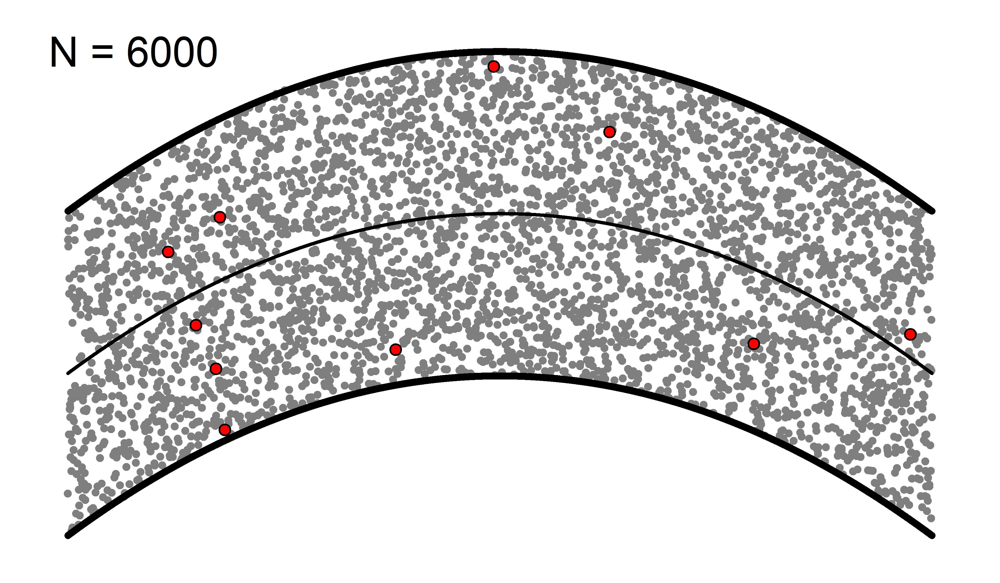
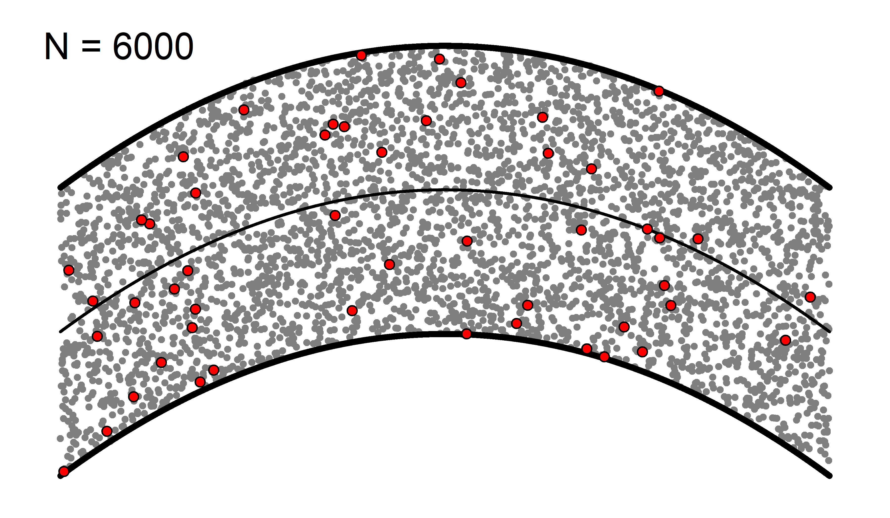
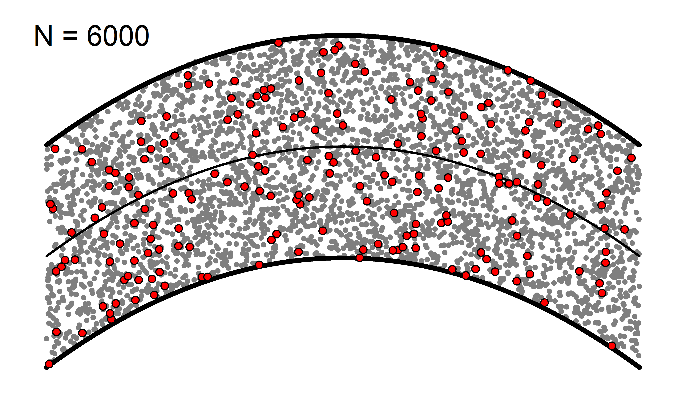
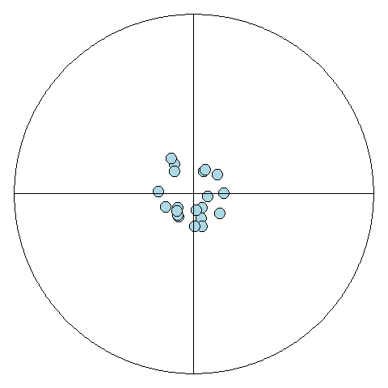

Fundamentos básicos de la estadística y medidas resumen
Definiciones
Antes de realizar un estudio para utilizar herramientas estadísticas, es necesario comprender algunos conceptos básicos sobre los individuos que se estudian.
Población: es el conjunto de medidas, individuos u objetos que comparten características en común. La población se basa en cuatro tipos: contenido, unidades y elementos, ubicación espacial y ubicación temporal.
Muestra: es un conjunto de elementos representativos extraídos de la población. Los resultados obtenidos en la muestra sirven para estimar el comportamiento de la población. Para que los resultados de la muestra puedan generalizarse a la población, ésta debe ser seleccionada adecuadamente, de tal forma que todos los elementos de la población tengan la oportunidad de ser escogido, a este tipo de muestra se le llama muestra aleatoria.
Censo: es cada uno de los miembros de la población.
Unidad: es el elemento seleccionado de la población.
El parámetro son aquellos valores que explican numéricamente a una población, en estos términos la población puede tener muchas características o parámetros de interés, en este sentido una de las formas de determinarlo es a partir de las medidas de tendencia central que comprende los valores de la media, la moda, la mediana, los cuartiles, los deciles y los percentiles que indican la posición de un valor respecto al comportamiento de la población.
Otras características de la población se determinan a partir de las medidas de dispersión que comprende los valores de la varianza, la desviación estándar y el coeficiente de variación que nos permite observar qué tan alejados están los elementos unos de otros. Establecer estas medidas permite determinar el grado de eficacia de los instrumentos de medición para evitar errores de sesgo. Estas medidas solo pueden ser calculadas para datos cuantitativos, pues para los datos cualitativos solo se pueden describir mediante la organización de los conteos.
Cuando se trata de una muestra extraída de una población, el cálculo de las características cambiará, y ya no hablaremos de parámetro sino de estadístico.
Se puede concluir que un parámetro es a una población, como un estadístico es a una muestra.
En general para describir los parámetros se utilizan letras del alfabeto griego (\(\mu\), \(\sigma\), \(\tau\), \(\rho\)) y para los estadísticos se utilizan letras del alfabeto latino (\(S\), \(M_o\), \(\bar{X}\)).
El objetivo es medir, categorizar o cuantificar las caracteristicas de cada unidad seleccionada, estas caractarísticas se les conoce como variables. Si cada uno de los elementos seleccionados hacen parte de una muestra aleatoria, entonces las variables extraídas de cada unidad son variables aleatorias, ya que, al ser medida en diferentes unidades es susceptible de adoptar diferentes valores.
Ejemplo
Población

10 muestras

50 muestras

200 muestras

1000 muestras

Medición
Medición es el proceso de asignar numerales a los objetos de acuerdo con ciertas reglas. (Stevens, 1951)
- Seleccionar eventos empíricos observables
- Usar números o símbolos para representar aspectos del evento
- Asociar cada observación con la representación del evento
Todo proceso de medición implica
- Selecionar un instrumento de medición adecuado, válido y confiable.
- Construir un instrumento de medición y validarlo.
- Aplicar el intrumento y obtener registros del comportamiento sobre las variables de estudio.
- Codificar, analizar e interpretar estas respuestas o mediciones
“Los Instrumentos son aquellos objetos materiales que nos permiten adquirir y analizar datos mediante los cuales pueden ser comprobadas las hipótesis de la investigación” (Best, 1973).
“Los instrumentos son procedimientos sistemáticos y estandarizados que permiten observar la conducta humana, a fin de hacer inferencias sobre determinados constructos, rasgos, dimensiones o atributos.” (Ruiz, 2002)
La validez es la capacidad de un instrumento de medición de cuantificar de forma significativa y adecuada la variable que pretende medir. Antes de seleccionar un instrumento de medición es necesario plantearse estas preguntas:
¿Cuán representativo es el comportamiento elegido como muestra del universo que se intenta representar? (validez de contenido)
¿Hasta dónde un instrumento mide realmente una determinada rasgo latente o una característica de las personas y con cuánta eficiencia lo hace? (validez de constructo)
¿Hasta dónde se puede predecir su aprendizaje en un programa de entrenamiento (o hasta dónde se puede anticipar su nivel de desempeño en el trabajo), a partir de su ejecución en la prueba? (validez predictiva)
Un instrumento para medir la inteligencia válido debe medir la inteligencia y no la memoria.
- Una prueba sobre conocimientos de Anatomía debe medir esto y no conocimientos de Biología.
Existen factores que afectan la confiabilidad y validez de un instrumento:
La improvisación para seleccionar o generar un instrumento.
Que el instrumento sea externo y no esté validado en el contexto donde se pretende aplicar.
Que el instrumento resulte inadecuado para los sujetos.
Que haya condiciones adversas para su aplicación (ruido, fatiga en los sujetos, etc.)
Aspectos técnicos (digitación, que no se entiendan las instrucciones, etc.)
La confiabilidad está relacionada con el grado en el cual la aplicación repetida de un instrumento al mismo sujeto produce resultados iguales. Existen diversos métodos para determinar la confiabilidad.
El que responde u observa es una fuente de error.
Errores de escala.
Errores aleatorios.
Errores sistemáticos.
Precisión y Exactitud
¿Cuál es el mejor escenario?
Alta y Alta

Alta y (?)

Baja y Alta

Baja y Baja

Actividad
Seleccionar a un compañero de su grupo para medir:
- Estatura
- Diámetro del Iris
- Longitud del cabello
¡Atención!
Estos ejercicios deben ser realizados sin la ayuda de un instrumento de medición certificado (reglas, metros, escalímetros, etc.).
Seleccionar un objeto y calcular:
- El perímetro
- El área
- El volumen
¡Atención!
Estos ejercicios deben ser realizados sin la ayuda de un instrumento de medición certificado (reglas, metros, escalímetros, etc.).